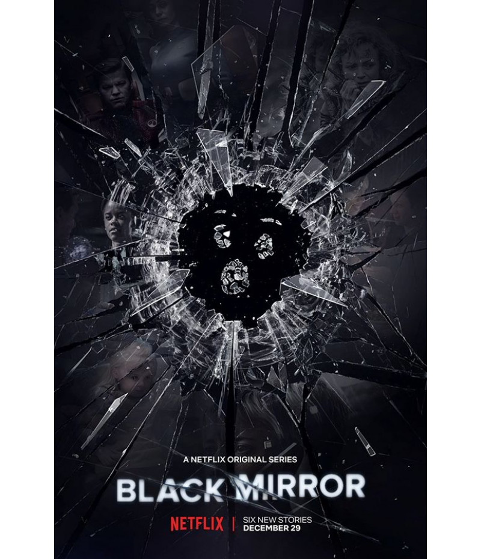

Black Mirror

📺Gênero: Ficção científica, suspense, drama psicológico
📅Temporadas: 7 (disponível na Netflix)
🎬Recomendação de Série: Black Mirror
Se você gosta de séries provocativas que exploram as consequências inesperadas da tecnologia no nosso cotidiano, Black Mirror é uma escolha imperdível.
Cada episódio é uma história independente, ambientada em futuros alternativos (ou nem tão distantes assim), onde a tecnologia escancara o lado mais sombrio da sociedade moderna. A série faz críticas afiadas ao comportamento humano, redes sociais, inteligência artificial, privacidade e o vício em telas — sempre com roteiros instigantes e muitas reviravoltas.
Destaques de episódios imperdíveis:
- "San Junipero" – Um conto emocional sobre amor e eternidade, que foge do tom sombrio habitual.
- "Nosedive" – Uma crítica à obsessão por aprovação social, onde a pontuação virtual define seu valor na sociedade.
- "White Christmas" – Um especial natalino sombrio que une várias histórias em um final perturbador.
Por que assistir?
- Episódios independentes — você pode assistir fora de ordem.
- Levanta reflexões profundas sobre o presente e o futuro.
- Roteiros inteligentes, visual impactante e muitas vezes perturbadoramente realista.
Clique aqui veja essa série